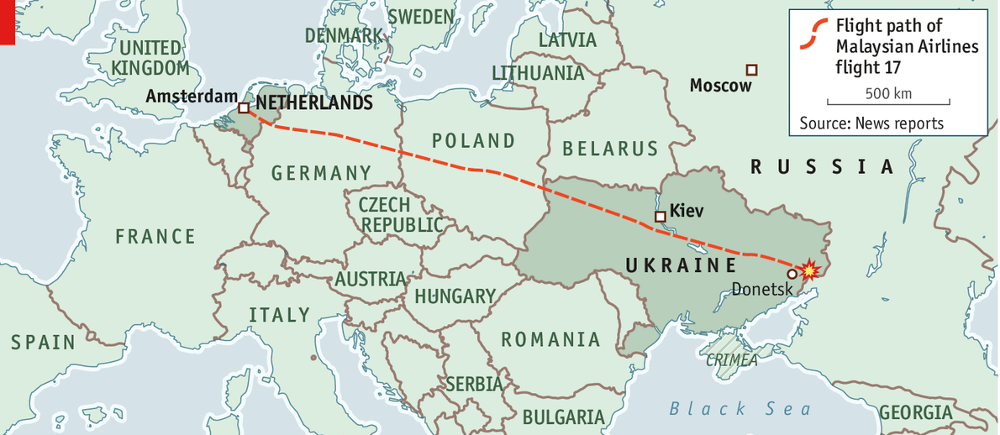

| THE circumstantial evidence for what happened to Malaysia Airlines Flight 17 and to the 298 people on board is already powerful. But there are still many unresolved questions, the answer to which will have a major bearing on what happens next. There is little or no doubt that the aircraft, which was flying above eastern Ukraine at 33,000 feet, was shot down by a Russian-designed surface-to-air missile, almost certainly a Buk missile (known as the SA-17 in the West) or just possibly a more powerful S-300 (designated SA-10 by NATO). Both systems are in use by Russian and Ukrainian forces. It appears that the missile was launched from Chernukhino, near Snezhnoye, about 80km from Donetsk, in territory controlled by Russian separatists and about 20km from the main crash site. That is easily within the range of even the earliest Buk systems which were developed in the 1970s by the Soviet Union. |
马航17航班和机上298名乘客出事的间接证据已经很有力了。但是仍然存在许多未解决的问题，接下来在发生了什么这件事情上哪个部门会有一个主导的态度。现在没有疑问的是，在乌克兰东部上空33000英尺飞行的飞机，被一枚俄罗斯设计的敌对空导弹击中，几乎可以肯定是Buk导弹或者也可能是更大威力的 S-300 。两种导弹系统都在俄罗斯和乌克兰军队中使用。导弹从 Chernukhino 发射，靠近乌克兰，距顿涅茨克大约80公里，是俄罗斯独立武装控制的区域，距坠毁地点大约20公里。这个范围甚至早期 Buk 系统也可以实现，这些系统是由苏联在19世纪70年代发展起来的。 |
| Early on July 17th, several hours before MH17 was destroyed, journalists from the Associated Press reported seeing a launcher near Snezhnoye that they said looked like a Buk system. Igor Sutyagin, a Russian expert at RUSI, a London-based think-tank, says that four hours before news of the shooting down spread, reports were coming in from social media of sightings of the launcher near what became the crash site. Previously, there had been reports about separatist rebels boasting of having captured Buk missiles from a Ukrainian army base near Donetsk. The reports first surfaced on June 29th and were mainly carried by Russian state news agencies. According to sources, the story first ran on TV Zvezda, the news agency of the Russian defence ministry. A major question is whether the missile system was really stolen or whether the story was planted to provide cover for the Russians providing the rebels surreptitiously with advanced weaponry. |
早在7月17日，MH17被击落的几个小时之前，美联社的记者报道看到 Snezhnoye 附近一个导弹发射台，据说很像 Buk 系统。Igor Sutyagin ，是一名在总部在伦敦的智囊团 RUSI 工作的俄罗斯专家，表示在行被击落的消息传开的四个小时前，从社交媒体上报道发现距坠落地点很近的发射器。此前，有报道层独立派反政府武装从 Donestsk 附近的乌克兰军队基地获得 Buk 导弹。报道第一次出现是在 6月29日，而且主要由俄罗斯国家通讯社报道。根据源头，事件首先出现在 Zvezda 电视台，这是一家俄罗斯国防局的新闻机构。主要问题是导弹系统是否真的被盗，或者事件放出来是为俄罗斯私下给反政府武装提供高级武器做掩护。 |
| A further question is whether the rebels would have had the technical capability of operating the system without Russian military help. The answer is that a properly trained crew would normally be needed, but that a partially trained crew might be able to work it without fully realising what they were doing. That seems the most likely explanation for what happened. On July 14th a Ukrainian military cargo plane, an Antonov-26, with eight people on board was brought down over the village of Davydo Myilske in the Luhansk region, a few miles from the Russian border. The aircraft was flying at 21,000 feet, well beyond the altitude range of shoulder-fired missiles, such as the Strela, used by the rebels to shoot down planes before. It seems that the people responsible for the destruction of MH17 thought they were taking out another military plane and not a civilian airliner. |
更进一步的问题是，反政府武装是否能够在没有俄罗斯军队的帮助下操作导弹系统。答案是必要的培训工作人员是需要的，但是部分培训人员或许也可以操作导弹系统而不需要完全知道他们在做什么。这像是最有可能的解释。7月14日，一架载有8名人员乌克兰军队货运飞机，Antonov-26，掉落在卢甘斯克地区的 Davydo Myilske 村庄，距离俄罗斯边境只有几英里。飞机在 21000 英尺飞行，大大超过了肩射式导弹（比如 Strela）的射击高度，之前反政府武装用来击落飞机。似乎该为 MH17 的坠毁负责的人认为他们击落了另一架军用飞机而不是民用客机。 |
| Last night Ukraine's intelligence agency, the SBU, released audio from what appeared to be intercepted phone calls between rebels and a Russian intelligence official. In one call, a separatist leader, Igor Bezler, says that they “have just shot down a plane”. In a later call, apparently from the crash site, another man says that Cossack militiamen have shot the plane down and that it was a passenger airliner. When asked if there are any signs of military equipment among the wreckage, he replies “absolutely nothing”. |
昨夜，一家乌克兰情报机构 SBU，放出一段电话拦截录音，录音中对话双方是反政府武装和俄罗斯情报部门。一段通话中，一名独立派领导，Igor Bezler ，说他们“刚刚击落了一架飞机”。另外一段来自飞机坠毁地点的通话，另一个人说 Cossack 军队击落了一架飞机，并且那是一架民用客机。当被问起飞机残骸有没有军队装备标识，他回答“显然没有”。 |
| It all suggests a tragic mistake made by reckless incompetents who may or may not have been receiving direct help from Russian handlers, who may or may not have been operating with official approval. Russia's president, Vladimir Putin, after a call yesterday with Barack Obama that began before news of the shooting down had broken, has already tried to shift responsibility for the crime to the renewed offensive in the east by Ukrainian forces ordered by President Petro Poroshenko to regain control of territory ceded to the rebels. Some Russian commentators have even tried to pin the blame on the Ukrainian armed forces—an incredible charge because the Ukrainians have had no need to use air defence systems against an enemy that has no aircraft. |
以上这些都暗示由粗心的无能的人造成的悲剧，可能没有接受俄罗斯管理者的直接帮助，也可能没有在当局的允许下操作导弹系统。俄罗斯总统普京，在昨天与奥巴马的电话通话之后，开始在击落新闻传开之前，已经试图转移罪行的责任给重新开始的进攻，在东部，波罗申科乌克兰势力控制，重新获得领土割让给反政府武装[?译]。一些俄罗斯评论员已经试图怪罪于乌克兰武装力量——这是不可思议的控诉，因为乌克兰没有必要使用空中防御系统对付没有飞机的敌人。 |
| In the hours and days ahead, as more information about exactly what happened emerges, the great question will be what part, if any, Russia played in the tragedy of Flight MH17. |
在过去的时间里，很多关于发生了什么的信息出现，最大的问题是在 MH17 航班的悲剧中，俄罗斯扮演了什么角色。 |
